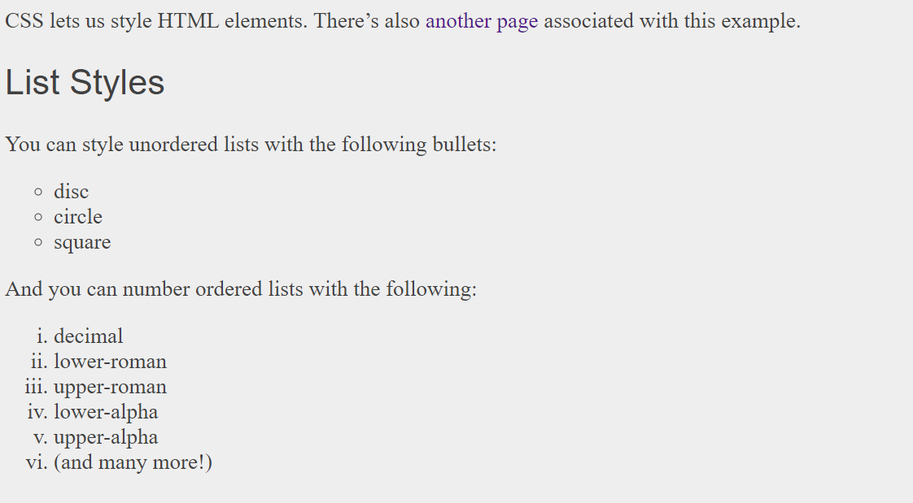
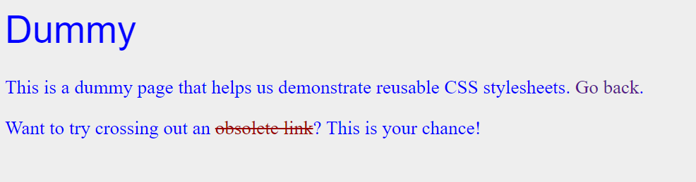

Html er den er siger hvad der er på siden og hvor meget der er på siden men også hvor det er. 
CSS er en "kreative" der siger hvordan den skal se du FX. om txten skal værer rød eller at der skal men et ord skal værer blå. 